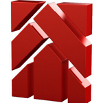
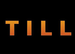
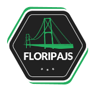

Habilidades
- HTML5
- CSS3
- Javascript/Jquery
- Bootstrap
- Design Responsivo
- Git
- Wordpress
- PHP
- Photoshop/Fireworks
Trabalho com desenvolvimento web a mais de 10 anos, em diferentes áreas, tenho meu conhecimento horizontalizado. Prestei serviços terceirizados para software-house. Tenho habilidade de captar a necessidade do cliente e desenvolver o projeto, fazerendo a analise completa e seu check-list de entrega, testando a usabilidade do projeto. Apresentando ao cliente a solução completa, em um treinamento corporativo.
Gerente de TI, e desenvolvedor web full stack para projetos como portal de notícias customizado e CMS customizados.

Atendimento a clientes exclusivos e projetos customizados, dentre eles, a Volvo do Brasil.

Wireframe, UX, programação e desenvolvimento de projetos web sendo Full Stack. Sites institucionais, loja virtual, blogs e pequenos sistemas web. Dentre eles o sistema do Festival de Cinema de Gramado de 2011. Usando CMS como Drupal, WordPress, Magento, OpenCart dentro outros.

O FloripaJS é uma comunidade formada em 2012 por um grupo de amigos que queriam fomentar o desenvolvimento front-end em Florianópolis e região. Hoje o FloripaJS é uma das comunidades mais ativas do Brasil, graças ao seu público fiel nos encontros e também apoiando o mundo open-source. Cerca de 150 pessoas, estiveram presentes no evento.
Veja as fotos do evento: http://migre.me/ty5dT
Veja os slides: http://migre.me/ty5hG
Vamos tomar um café e bater um bate papo?
Como me encontrar
Gostou do meu currículo? Compartilhe ;)